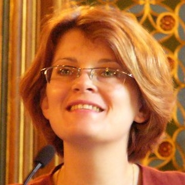

POLITICAL AND ECONOMIC SELF-CONSTITUTION
VI international seminar: “Political and economic self-constitution: Citizenship activity and education” will take place at University of Warmia and Mazury in Olsztyn on June 5th, 2018 in Olsztyn, Poland.
The VI edition of the seminar is focused on citizenship activity and education taking into consideration that we currently live in times of changes which are often forced by citizenship society through citizenship activity. It is impossible to overestimate the roles of both formal and non-formal education in such processes which will be discussed during the seminar in interdisciplinary perspective applying academic and practical approaches.
SHORT ARTICLES’ GUIDELINES
- Seminar proceedings will be published in English with ISBN.
- Short articles guidelines: 1200 – 1500 words, please avoid footnotes, figures and bibliography. References should be inserted in the text (surname, year). On the top of articles: authors’ name and surname, scientific degree, title, position, affiliation.
- Theoretical study should include: 1) introduction, 2) objectives, 3) results, 4) conclusions.
- Empirical study should include: 1) introduction, 2) objectives, 3) method and procedure, 4) results, 5) conclusions. These units should be clearly separated in the text.
- Short articles should be sent to email: dnipropsy@yahoo.com in *.doc, *docx by April 20th, 2018.
Participation fee 30 euros covers seminar proceedings publication.
COORDINATORS’ CONTACTS

Irina Bondarevskaya
Associate Professor, Senior Researcher of Laboratory of Mass Communication Psychology and Media Education, Institute of Social and Political Psychology, National Academy of Educational Sciences of Ukraine

Beata Krzywosz-Rynkiewicz
Associate Professor, Head of Department of Psychology of Development and Education, University of Warmia and Mazury in Olsztyn, Poland.
CO-ORGANIZERS
TOPICS
Psychologists, political scientists, historians, anthropologists and economists are invited to discuss the following topics:
- Citizenship activity and citizenship education;
- Media psychology and media education;
- Migration and diversity;
- Corruption;
- Public opinion on political and economic issues;
- Psycho-economic aspects of organizational activities and positive organizational behavior;
- Entrepreneurship psychology and psychology of consumer behavior;
- Political and economic consciousness and socialization;
- Psychology of richness and poverty, money, income and savings attitudes;
- Social representations paradigm for research in political and economic psychology;
- Educational basis of political and economic consciousness development;
- Psychological well-being as a precondition of economic development;
- Role of history and culture in self-constitution of a person.